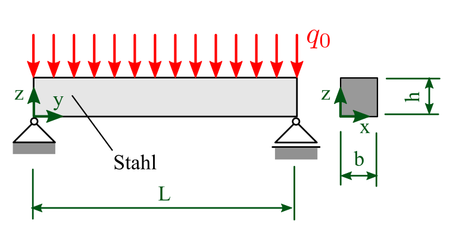
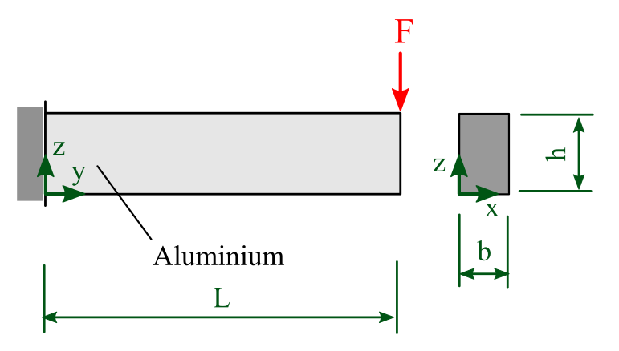

2. Berechnungen und erste grafische Darstellung am Beispiel von Biegebalken¶
2.1. Beispiel 1: zweiseitig gelagerter Balken mit Linienlast¶
Aufgabe: Berechnen Sie die maximale Durchbiegung

Länge: \(L = 1000\,\mathrm{mm}\)
Breite: \(b = 30\,\mathrm{mm}\)
Höhe: \(h = 30\,\mathrm{mm}\)
Linienlast: \(q_0=1000\,\mathrm{N}\)
E-Modul: \(E=200000\,\mathrm{MPa}\)
# Variablen
# Beispiel1: zweiseitig gelagerter Balken mit Linienlast
L = 1000.0 # mm
b = 30.0 # mm
h = 30.0 # mm
q0 = 1000.0 # N
E = 200000.0 # MPa -> N/mm^2
Berechnung des Flächenträgheitsmoments:
I = (b*h**3)/12
print(I)
67500.0
Berechnung der maximalen Durchbiegung
umax = (5*q0*L**3)/(384*E*I)
print(umax)
0.9645061728395061
2.2. Beispiel 2: einseitig eingespannter Balken mit Einzelkraft¶
Aufgabe: Berechnen Sie die maximale Durchbiegung

Länge: \(L = 1000\,\mathrm{mm}\)
Breite: \(b = 30\,\mathrm{mm}\)
Höhe: \(h = 60\,\mathrm{mm}\) Wert anders als im ersten Beispiel
Kraft: \(F=1000\,\mathrm{N}\) neuer Parameter
E-Modul: \(E=200000\,\mathrm{MPa}\) Wert anders als im ersten Beispiel
# Variablen
# Beispiel2: einseitig eingespannter Balken mit Einzelkraft
L = 1000.0 # mm
b = 30.0 # mm
h = 60.0 # mm
F = 1000.0 # N
E = 70000.0 # MPa -> N/mm^2
Berechnung des Flächenträgheitsmoments:
I = (b*h**3)/12
print(I)
540000.0
Berechnung der maximalen Durchbiegung
umax=(F*L**3)/(3*E*I)
print(umax)
8.818342151675486
2.3. Darstellung der Durchbiegung in Abhängigkeit der Länge¶
Aufgabe: Stellen Sie die maximale Durchbiegung in Abhängigkeit der Länge für beide Beispiele dar
2.3.1. Beispiel 1: zweiseitig gelagerter Balken mit Linienlast¶
# Variablen
# Beispiel1: zweiseitig gelagerter Balken mit Linienlast
L = 1000.0 # mm
b = 30.0 # mm
h1 = 30.0 # mm
q0 = 1000.0 # N
E1 = 200000.0 # MPa -> N/mm^2
I1 = (b*h1**3)/12
umax1 = (5*q0*L**3)/(384*E1*I1)
print(umax1)
0.9645061728395061
Definition der Länge L als np.array (Liste aus Werten)
import numpy as np
L = np.array([0,250,500,750,1000]) # mm
print(L)
[ 0 250 500 750 1000]
Das Ergebnis ist dann automatisch ebenfalls eine Liste
umax1 = (5*q0*L**3)/(384*E1*I1)
print(umax1)
[0. 0.01507041 0.12056327 0.40690104 0.96450617]
import matplotlib.pyplot as plt
plt.plot(L,umax1);
plt.xlabel("Länge [mm]");
plt.ylabel("maximale Verschiebung [mm]");
Um die Werte zusätzlich als Punkte einzublenden kann:
plt.plot(marker="s",ms=10)
marker: “s” = square
ms = markersize (Größe der Punkte)
Übersicht über alle Stile (matplotlib Cheat Sheet)
plt.plot(L,umax1, marker="s",ms=10);
plt.xlabel("Länge [mm]");
plt.ylabel("maximale Verschiebung [mm]");
Um den Verlauf zu glätten sind mehr Punkte einzugeben, dafür ist np.linspace() sehr praktisch (wieder ohne die Punkte)
L = np.linspace(0,1000,20) # mm
print(L)
[ 0. 52.63157895 105.26315789 157.89473684 210.52631579
263.15789474 315.78947368 368.42105263 421.05263158 473.68421053
526.31578947 578.94736842 631.57894737 684.21052632 736.84210526
789.47368421 842.10526316 894.73684211 947.36842105 1000. ]
L = np.linspace(0,1000,100) # mm
umax1 = (5*q0*L**3)/(384*E1*I1)
plt.plot(L,umax1);
plt.xlabel("Länge [mm]");
plt.ylabel("maximale Verschiebung [mm]");
2.3.2. Beispiel 2: einseitig eingespannter Balken mit Einzelkraft¶
# Variablen
# Beispiel2: einseitig eingespannter Balken mit Einzelkraft
L = np.linspace(0,1000,100) # mm
b = 30.0 # mm
h2 = 60.0 # mm
F = 1000.0 # N
E2 = 70000.0 # MPa -> N/mm^2
I2 = (b*h2**3)/12
umax2=(F*L**3)/(3*E2*I2)
plt.plot(L,umax2);
plt.xlabel("Länge [mm]");
plt.ylabel("maximale Verschiebung [mm]");
2.3.3. Beide Beispiele zusammen¶
Bezeichnung über
label=Legende anzeigen mit
plt.legend()
plt.plot(L,umax1,label="Beispiel 1");
plt.plot(L,umax2,label="Beispiel 2");
plt.legend();
plt.xlabel("Länge [mm]");
plt.ylabel("maximale Verschiebung [mm]");
2.3.4. stylistische Anpassungen¶
Stil zurücksetzen:
wichtig um den Stil nicht ungewollt auf die nächsten Plots zu übertragen
plt.style.use('default')
Schrift:
muss vor plt.plot() kommen
Schriftgröße:
plt.rcParams.update({'font.size': 20})Schriftart:
plt.rcParams['font.family'] = 'STIXGeneral'
STIXGeneral = LaTeX Schrift
Bildgröße:
für alle Texte
plt.figure(figsize=(8,5))muss vorplt.plot()kommen
Größe in inces (Default: 6,4)individuell z.B. in Title, Legende, Achsenbeschriftung
fontsize=18
Gitter:
plt.grid()
Titel:
plt.title("Beispieltitel")
Linien:
in plt.plot()
Übersicht über alle Stile (matplotlib Cheat Sheet)
Linienfarbe:
plt.plot(color="red")Liniendicke:
plt.plot(lw=2)(lw = linewidth)Linienstil:
plt.plot(ls="--")(ls = linestyle)
#stil zurücksetzen
plt.style.use('default')
plt.figure(figsize=(8,5))
plt.rcParams['font.family'] = 'STIXGeneral'
plt.rcParams['font.size'] = 18;
plt.plot(L,umax1,label="Beispiel 1",color="red", lw=2, ls="-");
plt.plot(L,umax2,label="Beispiel 2",color="blue", lw=2, ls="--");
plt.legend(fontsize=16);
plt.grid();
plt.title("Vergleich beider Modelle", fontsize=16)
plt.xlabel("Länge [mm]");
plt.ylabel("maximale Verschiebung [mm]");
wenn wir den Stil jetzt nicht zurücksetzen plt.style.use('default') wird dieser automatisch in dem nächsten plot verwendet.
Nun stellen wir nur den vorderen Bereich der Länge von L=0 bis L=200mm dar:
plt.xlim(0,200)
für y-Achse analog:
plt.ylim(0,0.1)
plt.xlim(0,200);
plt.ylim(0,0.1);
plt.plot(L,umax1,label="Beispiel 1",color="red", lw=2, ls="-");
plt.plot(L,umax2,label="Beispiel 2",color="blue", lw=2, ls="--");
plt.xlabel("Länge [mm]");
plt.ylabel("maximale Verschiebung [mm]");
plt.grid();
plt.legend(fontsize=16);
2.3.5. Datei speichern¶
mit plt.savefig('Dateiname.png', bbox_inches='tight', dpi=150)
bbox_inches='tight'sorgt dafür das die Beschriftungen immer mit im Bild gespeichert werden (können sonst manchmal abgeschnitten sein)dpiregelt die Größe des Pixelbildes (dots per inch)
plt.xlim(0,200);
plt.ylim(0,0.1);
plt.plot(L,umax1,label="Beispiel 1",color="red", lw=2, ls="-");
plt.plot(L,umax2,label="Beispiel 2",color="blue", lw=2, ls="--");
plt.xlabel("Länge [mm]");
plt.ylabel("maximale Verschiebung [mm]");
plt.grid();
plt.legend(fontsize=16);
plt.savefig('Uebung1_detail.png', bbox_inches='tight', dpi=150)
plt.plot(L,umax1,label="Beispiel 1",color="red", lw=2, ls="-");
plt.plot(L,umax2,label="Beispiel 2",color="blue", lw=2, ls="--");
plt.xlabel("Länge [mm]");
plt.ylabel("maximale Verschiebung [mm]");
plt.grid();
plt.legend(fontsize=16);
plt.savefig('Uebung1_alles.png', bbox_inches='tight', dpi=150)